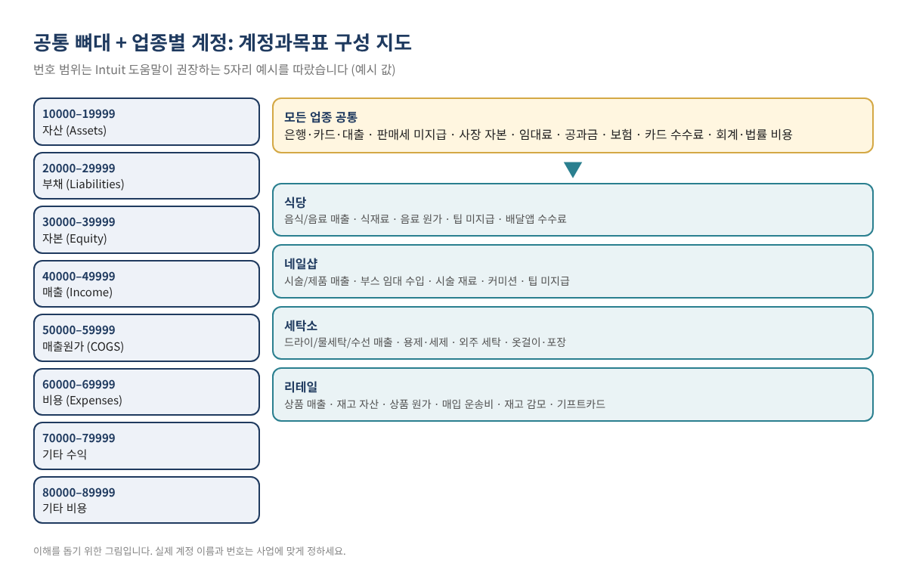
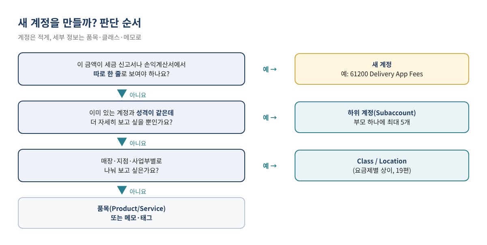
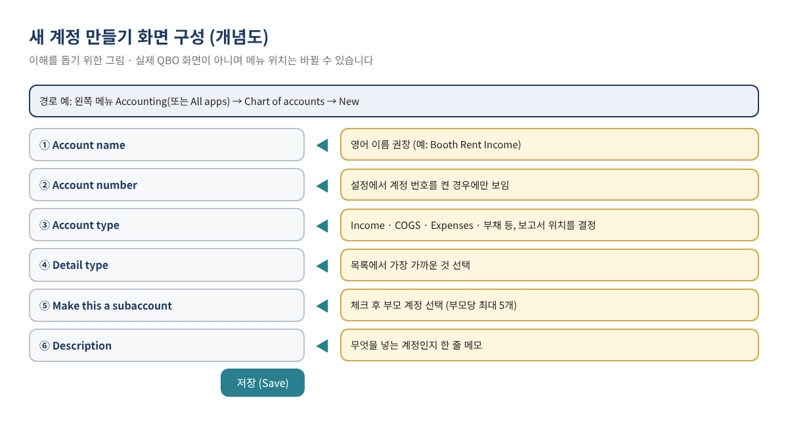
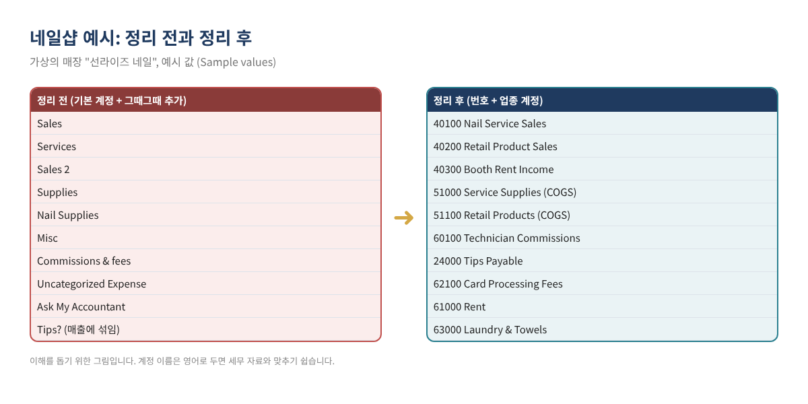

QBO 업종별 Chart of Accounts 예시: 식당·네일샵·세탁소·리테일 계정과목표, 이렇게 만드세요
QuickBooks Online(이하 QBO)이 처음 만들어 주는 계정과목(Chart of Accounts)은 모든 업종에 두루 맞도록 만든 범용 목록입니다. 그래서 식당이든 네일샵이든 그대로 쓰면 "Sales" 한 줄에 매출이 다 섞이고, 직원에게 돌아갈 팁이나 남의 돈인 판매세가 매출처럼 보이며, 재료비와 일반 소모품이 구분되지 않습니다. 몇 달 뒤 손익계산서를 열면 "우리 가게의 원가율이 얼마인지" 같은 가장 기본적인 질문에 답할 수 없습니다.
이 글은 QBO 기초 시리즈 2편입니다. 1편(기초 잔액과 Chart of Accounts 세팅)에서 계정 정리 원칙과 번호 체계를 다뤘다면, 이번 글은 한인 사업자가 많은 식당·네일샵·세탁소·리테일 네 업종에 대해 실제로 쓸 수 있는 계정 예시를 표로 정리하고, 각 계정이 세금 신고서(Schedule C)의 어느 줄과 연결되는지, QBO에 어떻게 넣는지까지 단계별로 설명합니다.
이런 분께 필요합니다: 식당·카페, 네일샵, 세탁소, 소매점(옷가게·화장품·마트 등)을 운영하면서 QBO를 쓰는 분 / 기본 계정 그대로 쓰다가 "Misc", "Sales 2" 같은 계정이 늘어난 분 / 회계사에게 넘길 손익계산서를 업종에 맞게 정리하고 싶은 분.
1. 업종별 계정과목표를 따로 만드는 이유
계정과목표는 돈을 나눠 담는 바구니 목록입니다. 바구니가 업종에 맞지 않으면 매달 같은 질문에 답할 수 없습니다. 업종별 계정을 만들기 전에 아래 세 가지 질문에 답이 나오는지 확인해 보세요.
- 무엇을 팔아서 얼마를 벌었나? — 매출을 주요 품목·서비스별로 2~4개로 나눕니다.
- 파는 데 직접 들어간 돈은 얼마인가? — 식재료, 시술 재료, 세제·용제, 상품 원가처럼 매출과 함께 움직이는 비용은 매출원가(Cost of Goods Sold)로 따로 모읍니다.
- 내 돈이 아닌 돈은 얼마나 들고 있나? — 판매세, 직원 팁, 고객 선결제, 기프트카드처럼 나중에 내줘야 할 돈은 매출이 아니라 부채(Liabilities)입니다.
Intuit 도움말에 따르면 계정 유형(Account type)은 그 계정이 대차대조표와 손익계산서 중 어디에 나타날지를 정하고, 세부 유형(Detail type)은 회계 처리 방식에 영향을 주지 않으며 정확히 맞는 것이 없으면 가장 가까운 것을 고르면 됩니다(Account type and detail types). 즉, 유형은 신중하게, 세부 유형은 가장 가까운 것으로 고르면 됩니다.

2. 네 업종이 함께 쓰는 공통 뼈대
아래 계정은 업종과 관계없이 대부분의 매장에 필요합니다. 번호는 Intuit 도움말이 예시로 드는 5자리 범위(10000번대 자산, 20000번대 부채, 30000번대 자본, 40000번대 매출, 50000번대 매출원가, 60000번대 비용, 70000번대 기타 수익, 80000번대 기타 비용)를 따랐습니다(Use account numbers). 이 범위는 권장 예시이며 의무는 아닙니다.
| 번호·계정 이름 (예시 값) | 계정 유형 | 메모 |
|---|---|---|
| 10100 Business Checking | Bank | 사업용 체크 계좌 |
| 12000 Card Clearing | 자산(Assets) | 카드 매출이 입금되기 전까지 담아 두는 정산 계정 |
| 20100 Business Credit Card | Credit Card | 사업용 신용카드 |
| 22000 Sales Tax Payable | 부채(Liabilities) | QBO 판매세 기능을 켜면 세무 기관 이름으로 자동 생성될 수 있음 |
| 30000 Owner's Equity / Owner's Draw | 자본(Equity) | 사장님 출자·인출 (12편에서 자세히) |
| 61000 Rent | Expenses | 매장 임대료 |
| 62100 Card Processing Fees | Expenses | 카드 수수료 |
| 64000 Utilities | Expenses | 전기·가스·수도·인터넷 |
| 65000 Insurance | Expenses | 사업 보험 (건강보험 제외) |
| 66000 Legal & Professional Fees | Expenses | 회계·법률 비용 |
표 1. 공통 계정 예시. 예시 값 / Sample values. 이름은 영어로 두는 편이 세무 자료와 맞추기 쉽습니다.
팁: QBO에는 Undeposited Funds, Opening Balance Equity, Retained Earnings, Sales of Product Income처럼 시스템이 쓰는 기본 계정이 있습니다. Intuit 도움말은 이런 계정은 비활성화할 수 없고, 일부는 이름을 바꾸거나 지우면 QBO가 새로 만든다고 설명합니다(Manage default and special accounts). 기본 계정은 그대로 두고 업종 계정을 추가하는 방식이 안전합니다.
3. 업종별 계정 예시
3-1. 식당·카페
식당은 음식과 음료의 원가율이 다르므로 매출과 원가를 같은 짝으로 나누는 것이 핵심입니다. 카드로 받은 팁은 직원에게 돌려줄 돈이므로 매출이 아니라 부채로 둡니다. IRS는 직원이 한 달에 받은 팁이 $20 이상이면 다음 달 10일까지 고용주에게 보고해야 하고, 카드로 받아 고용주가 나눠 주는 팁도 여기에 포함된다고 안내합니다(IRS Topic no. 761). 일일 마감 방법은 별도 글에서 다루므로 여기서는 계정 구성만 정리합니다.
| 번호·계정 이름 (예시 값) | 유형 | 쓰는 이유 |
|---|---|---|
| 40100 Food Sales | Income | 음식 매출 |
| 40200 Beverage Sales | Income | 음료·주류 매출 (원가율이 다름) |
| 40900 Discounts & Comps | Income (차감) | 할인·서비스 제공액을 숨기지 않음 |
| 51000 Food Cost | Cost of Goods Sold | 식재료 |
| 51100 Beverage Cost | Cost of Goods Sold | 음료·주류 원가 |
| 51500 Packaging & To-Go Supplies | Cost of Goods Sold | 포장 용기 (비용으로 둘 수도 있음) |
| 24000 Tips Payable | 부채(Liabilities) | 직원에게 줄 카드 팁 |
| 61200 Delivery App Fees | Expenses | 배달앱 수수료를 따로 보기 |
표 2. 식당 계정 예시. 예시 값 / Sample values.
3-2. 네일샵
네일샵은 시술 매출, 제품 판매 매출, 그리고 부스를 빌려주는 경우의 부스 임대 수입이 성격이 다르므로 나눕니다. 기술자에게 주는 커미션도 따로 모아야 매출 대비 인건비 비율을 볼 수 있습니다.
| 번호·계정 이름 (예시 값) | 유형 | 쓰는 이유 |
|---|---|---|
| 40100 Nail Service Sales | Income | 매니큐어·페디큐어·젤 등 시술 |
| 40200 Retail Product Sales | Income | 폴리시·로션 등 제품 판매 |
| 40300 Booth Rent Income | Income | 부스 임대 수입 (신고서 위치는 세무 담당자와 확인) |
| 51000 Service Supplies | Cost of Goods Sold | 젤·아크릴·파일 등 시술 재료 |
| 51100 Retail Products | Cost of Goods Sold | 판매용 제품 매입 |
| 24000 Tips Payable | 부채(Liabilities) | 기술자에게 줄 카드 팁 |
| 60100 Technician Commissions | Expenses | 독립 계약자에게 주는 커미션 (직원이면 급여로) |
| 63000 Laundry & Towels | Expenses | 수건 세탁·일회용품 |
표 3. 네일샵 계정 예시. 예시 값 / Sample values.
주의: 기술자가 직원인지 독립 계약자인지는 계정 이름이 아니라 실제 관계로 정해집니다. IRS는 일의 결과만이 아니라 무엇을 어떻게 할지까지 지시할 권리가 있으면 독립 계약자가 아니며, 판단은 사실관계에 따라 달라진다고 설명합니다(Independent contractor defined). 직원이라면 커미션은 급여로 처리합니다. 급여 기록은 14편에서 다룹니다.
3-3. 세탁소
세탁소는 드라이클리닝, 물세탁, 수선 매출을 나누고, 외부 공장에 맡기는 비용과 용제·세제, 옷걸이·비닐 같은 소모품을 구분하면 서비스별 수익성이 보입니다. 1편의 세탁소 예시와 같은 번호 체계를 쓰면 이어서 관리하기 편합니다.
| 번호·계정 이름 (예시 값) | 유형 | 쓰는 이유 |
|---|---|---|
| 40100 Dry Cleaning Sales | Income | 드라이클리닝 |
| 40200 Laundry Sales | Income | 물세탁·셔츠 |
| 40300 Alteration Sales | Income | 수선 |
| 51000 Cleaning Solvent & Detergent | Cost of Goods Sold | 용제·세제 |
| 51200 Outside Cleaning (Wholesale Plant) | Cost of Goods Sold | 외부 공장 위탁비 |
| 51300 Hangers, Bags & Tags | Cost of Goods Sold | 옷걸이·비닐·태그 |
| 23000 Customer Prepayments | 부채(Liabilities) | 맡길 때 미리 받은 돈 (발생주의 장부) |
| 62300 Equipment Repairs | Expenses | 기계 수리 |
표 4. 세탁소 계정 예시. 예시 값 / Sample values.
3-4. 리테일 (소매점)
소매점은 재고가 핵심입니다. 상품을 살 때는 재고 자산으로, 팔 때 상품 원가로 옮기는 구조가 필요하고, 매입 운송비와 재고 감모(분실·파손)를 따로 보면 마진을 정확히 알 수 있습니다. 기프트카드는 판매 시점에는 매출이 아니라 부채입니다. QBO의 재고 추적 기능 사용 가능 여부는 요금제에 따라 다르니 현재 요금제 안내를 확인하세요(20편에서 다룹니다).
| 번호·계정 이름 (예시 값) | 유형 | 쓰는 이유 |
|---|---|---|
| 13000 Inventory Asset | 자산(Assets) | 팔기 전 상품 |
| 40100 Merchandise Sales | Income | 상품 매출 |
| 40900 Sales Returns & Allowances | Income (차감) | 반품·에누리 |
| 50100 Cost of Merchandise Sold | Cost of Goods Sold | 판매된 상품 원가 |
| 50200 Freight-In | Cost of Goods Sold | 매입 운송비 |
| 50300 Inventory Shrinkage | Cost of Goods Sold | 분실·파손 재고 조정 |
| 25000 Gift Card Liability | 부채(Liabilities) | 판매했지만 아직 안 쓴 기프트카드 |
| 67000 Advertising | Expenses | 광고·홍보 |
표 5. 리테일 계정 예시. 예시 값 / Sample values.
4. 계정과 세금 신고서(Schedule C) 연결하기
개인사업자(1인 LLC 포함)는 보통 Schedule C(Form 1040)로 사업 소득을 신고합니다. 2025년 Schedule C 양식에는 1번 줄 Gross receipts or sales, Part II의 8~27b번 비용 줄, 그리고 Part III 매출원가(35~42번 줄)가 있습니다(2025 Schedule C). 계정을 만들 때 "이 계정은 어느 줄로 가는가"를 정해 두면 연말에 회계사가 다시 분류할 일이 줄어듭니다. 파트너십·S법인은 다른 양식을 쓰므로 아래 표는 참고용입니다.
| QBO 계정 (예시) | 2025 Schedule C 줄 (양식 표기) | 비고 |
|---|---|---|
| 각 업종의 매출 계정 | Line 1 Gross receipts or sales | 팁 미지급·판매세는 포함하지 않음 |
| 40900 Discounts / Returns | Line 2 Returns and allowances | 반품·에누리 |
| 51000 식재료·시술 재료 등 | Part III Line 36 Purchases 또는 38 Materials and supplies | 재고·원가 처리 방식에 따라 다름 |
| 67000 Advertising | Line 8 Advertising | |
| 60100 Technician Commissions | Line 10 Commissions and fees 또는 11 Contract labor | 지급 성격에 따라 다름 |
| 65000 Insurance | Line 15 Insurance (other than health) | |
| 66000 Legal & Professional Fees | Line 17 Legal and professional services | |
| 61000 Rent | Line 20b Rent or lease: Other business property | 장비 리스는 20a |
| 62300 Equipment Repairs | Line 21 Repairs and maintenance | |
| 64000 Utilities | Line 25 Utilities | |
| 62100 Card Processing Fees | Line 27b Other expenses (Part V) | 양식에 별도 줄이 없음 |
표 6. 계정과 Schedule C 줄 연결 예시. 예시 값 / Sample values. 실제 신고 위치는 세무 담당자와 확인하세요.
5. QBO에 업종 계정 넣기: 단계별

- 계정 번호 켜기. Intuit 도움말 기준으로 계정 번호는 기본값이 꺼져 있습니다. Settings ⚙ → Account and settings → Advanced → Chart of accounts에서 Enable account numbers를 켜고, 보고서에 번호를 보이려면 Show account numbers도 선택합니다(Use account numbers).
- 현재 목록 백업. Chart of accounts 화면에서 목록을 엑셀로 내보내 원본을 남겨 둡니다.
- 번호 일괄 입력. Chart of accounts 화면의 Batch edit(연필 아이콘)으로 기존 계정에 번호를 한 번에 붙입니다(Use account numbers).
- 새 계정 추가. 왼쪽 메뉴의 Accounting(또는 All apps → Accounting) → Chart of accounts → New에서 계정 이름, 유형, 세부 유형을 고르고 저장합니다. 메뉴 이름이 다르면 검색창에 "chart of accounts"를 입력하세요(Add an account).
- 하위 계정은 꼭 필요할 때만. "Make this a subaccount"를 체크하고 부모 계정을 고릅니다. Intuit 도움말은 부모 계정 하나에 하위 계정을 최대 5개까지 만들 수 있다고 안내합니다(Create subaccounts).
- 여러 개를 한 번에 넣으려면 가져오기. Intuit은 업종별 계정과목표 CSV 템플릿을 제공합니다(Import Chart of Accounts templates). 엑셀에서 표 2~5처럼 정리한 뒤 Settings ⚙ → Import data → Chart of accounts로 가져오고 열을 연결합니다. 가져오기로는 기초 잔액이 들어가지 않으니 잔액은 1편 방식으로 따로 입력합니다.
- 안 쓰는 계정은 비활성. QBO에서는 계정을 삭제할 수 없고 비활성(Make inactive)하거나 다른 계정과 합칠 수 있습니다. 비활성해도 과거 거래는 남고, 잔액이 있는 대차대조표 계정을 비활성하면 잔액이 Opening Balance Equity로 옮겨진다고 안내되어 있으니 잔액이 0인지 먼저 확인하세요(Make an account inactive).
- 계정 수 한도 확인. Intuit 사용 한도 안내에 따르면 Simple Start·Essentials·Plus는 계정과목 최대 250개, Advanced는 제한이 없으며, 활성 계정만 한도에 포함됩니다. 사용량은 Settings ⚙ → Account and settings → Usage에서 확인합니다(Learn about usage limits). 한도와 요금제는 바뀔 수 있습니다.

중복 계정 합치기: 같은 성격의 계정이 두 개라면(예: Supplies와 Nail Supplies) 없앨 계정의 이름과 유형·세부 유형을 남길 계정과 똑같이 바꾸고 저장하면 합치기(merge) 확인 창이 나옵니다. QuickBooks 커뮤니티의 Intuit 답변은 합치기는 되돌릴 수 없고, 은행 연결된 계정은 합칠 수 없다고 설명합니다(QuickBooks Community). 거래를 계정별로 옮겨야 한다면 대량 재분류 가이드를 참고하세요.
6. 따라 해 보기: 가상의 네일샵 "선라이즈 네일"
선라이즈 네일(가상의 매장)은 기본 계정에 그때그때 계정을 추가해 쓰다 보니 "Sales", "Sales 2", "Misc", "Uncategorized Expense"가 생겼고, 카드 팁도 매출에 섞여 있었습니다. 한 달 장부를 업종 계정으로 다시 분류하면 아래처럼 바뀝니다.

| 정리 전 계정 | 금액 | 정리 후 계정 | 금액 |
|---|---|---|---|
| Sales | $36,000 | 40100 Nail Service Sales | $31,200 |
| Sales 2 | $2,400 | 40200 Retail Product Sales | $2,800 |
| 40300 Booth Rent Income | $1,800 | ||
| 24000 Tips Payable (부채, 손익 아님) | $2,600 | ||
| 매출 합계 | $38,400 | 매출 합계 | $35,800 |
| Supplies | $4,100 | 51000 Service Supplies / 51100 Retail Products | $3,300 / $1,400 |
| Commissions & fees | $9,800 | 60100 Technician Commissions / 62100 Card Processing Fees | $8,900 / $900 |
| Misc | $1,950 | 63000 Laundry & Towels / 67000 Advertising | $450 / $900 |
| Uncategorized Expense | $1,200 | 62300 Equipment Repairs | $1,200 |
| 비용 합계 | $17,050 | 비용 합계 | $17,050 |
| 순이익 | $21,350 | 순이익 | $18,750 |
표 7. 한 달 손익 비교. 예시 값 / Sample values. 차이 $2,600은 매출로 잘못 잡힌 카드 팁입니다.
결과를 보면 비용 총액은 그대로지만, 순이익이 $2,600 줄었습니다. 줄어든 것이 아니라 원래 사장님 돈이 아니었던 팁이 빠진 것입니다. 이제 시술 재료비가 시술 매출의 약 10.6%($3,300 ÷ $31,200), 커미션이 약 28.5%($8,900 ÷ $31,200)라는 숫자가 바로 보입니다. 정리 전 장부에서는 이런 비율을 계산할 수 없었습니다.
7. 자주 하는 실수
- 메뉴·시술마다 계정을 만듦. 계정이 수십 개가 되면 손익계산서를 읽을 수 없습니다. 세부 내역은 품목(Product/Service)으로 나누세요.
- 팁·판매세·기프트카드를 매출 계정에 넣음. 매출과 이익이 부풀려집니다. 부채 계정으로 두세요.
- 재료비를 일반 Supplies 비용에 넣음. 원가율을 볼 수 없습니다. 직접 원가는 매출원가로.
- 기본 계정 이름을 바꾸거나 지우려 함. 일부 기본 계정은 QBO가 다시 만듭니다.
- 잔액이 남은 계정을 비활성. 잔액이 Opening Balance Equity로 옮겨집니다. 정리 방법은 Opening Balance Equity 정리 가이드 참고.
- 계정 이름을 한국어·영어 섞어 씀. 회계사와 자료를 주고받을 때 혼란이 생깁니다.
8. 자주 묻는 질문
계정은 몇 개가 적당한가요?
매장 하나라면 손익계산서 계정 20~40개 정도면 대부분 충분합니다. 기준은 개수가 아니라 "매달 답해야 할 질문에 답이 나오는가"입니다.
Intuit의 업종 템플릿을 그대로 써도 되나요?
출발점으로는 좋습니다. Intuit이 업종별 CSV 템플릿을 제공하니(템플릿 안내) 내려받아 내 가게에 없는 계정은 지우고, 이 글의 표처럼 팁·판매세 같은 부채 계정을 추가한 뒤 가져오세요.
식재료를 매출원가로 할지 비용으로 할지 꼭 정해야 하나요?
QBO에서는 어느 쪽이든 기록은 됩니다. 다만 매출원가로 두면 손익계산서에 매출총이익이 따로 나와 원가율을 바로 볼 수 있습니다. 세금 신고서 위치는 세무 담당자와 확인하세요.
네일샵 부스 임대 수입은 매출과 같이 넣어도 되나요?
장부에서는 별도 계정으로 두는 것이 좋습니다. 시술 매출과 성격이 달라 수익성 분석이 흐려지고, 신고서에서 어떻게 보고할지도 따로 판단해야 하기 때문입니다.
매장이 두 곳인데 계정을 매장별로 만들까요?
계정을 복제하기보다 Class 또는 Location 기능을 쓰는 것이 일반적입니다. 사용 가능한 요금제와 설정은 19편에서 다룹니다.
9. 셀프 체크리스트
- ☐ 매출을 2~4개로 나눴고 팁·판매세·선결제·기프트카드는 부채 계정에 있다
- ☐ 직접 원가는 매출원가(Cost of Goods Sold)로 모았다
- ☐ 계정 번호를 켜고 5자리 범위로 정리했다
- ☐ 각 계정이 Schedule C 어느 줄로 가는지 메모했다
- ☐ 기존 목록을 내보내 백업했다
- ☐ 중복 계정은 합치고 안 쓰는 계정은 잔액 0 확인 후 비활성했다
- ☐ 활성 계정 수가 요금제 한도 안에 있다
관련 글
- QuickBooks Online 기초 가이드: 처음 시작할 때 꼭 알아야 할 10가지 (시리즈 시작)
- 1편: 기초 잔액과 Chart of Accounts 제대로 세팅하는 법
- 잘못 분류된 거래 대량 재분류하기
- Opening Balance Equity 정리하기
- Undeposited Funds 정리하기
- QuickBooks Desktop에서 Online으로 옮기기
이 글은 일반적인 교육용 정보이며 세무·법률·재무 자문이 아닙니다. 표의 계정 이름·번호·금액은 이해를 돕기 위한 예시이고, 실제 계정 구성과 세금 신고서 위치는 사업 형태와 사실관계에 따라 다를 수 있습니다. QBO 화면, 메뉴 이름, 요금제와 한도는 수시로 바뀌므로 현재 화면과 Intuit 공식 도움말, IRS 등 공식 안내를 확인하세요.
QuickBooks is a registered trademark of Intuit Inc.; not affiliated with or endorsed by Intuit.
출처
- Intuit, Account type and detail types in QuickBooks Online
- Intuit, Add an account to your chart of accounts in QuickBooks Online
- Intuit, Create subaccounts in your chart of accounts
- Intuit, Use account numbers in your chart of accounts
- Intuit, Import Chart of Accounts templates
- Intuit, Learn about usage limits
- Intuit, Make an account inactive on your chart of accounts (global)
- Intuit, Manage default and special accounts in your chart of accounts
- QuickBooks Community (Intuit 답변), How do I merge accounts in current version of QuickBooks Online?
- IRS, 2025 Schedule C (Form 1040)
- IRS, Topic no. 761, Tips – withholding and reporting
- IRS, Independent contractor defined